Как поставить
- 1Скачайте«Все равно скачать»
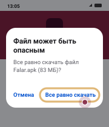
- 2Откройте файл«Открыть»
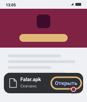
- 3Разрешите установку из неизвестных источников«Настройки» → включите → назад→
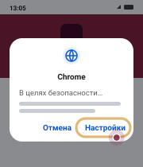
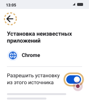
- 4Установите«Установить»
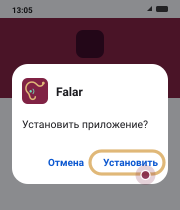
- 5Модели — по Wi-Fiодин раз, потом без сети
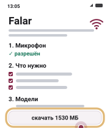
Если увидите такое
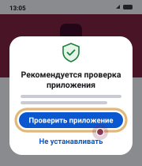
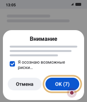
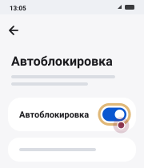
Что умеет
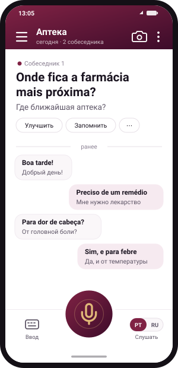
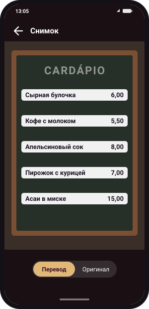
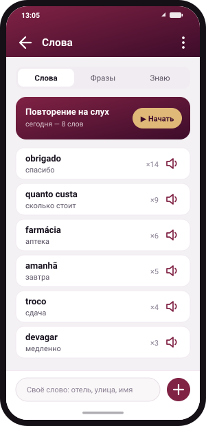
- Android 9+
- 2–3 ГБ места
- Wi-Fi один раз
- Потом без сети
Речь и переводы остаются на телефоне